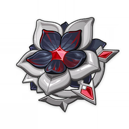

Genshin Impact · Versión 7.2
Análisis del Rol y Escalado
Varesa es un personaje de elemento Electro originario de Natlan que utiliza Catalizador y se posiciona en el tier T1 (A+) Main DPS dentro del rol de Hipercarry Electro • Rayos Crepusculares de Alto Impacto. Su rendimiento en combate gira en torno a este eje principal: Escalado por ATQ%, Daño Electro y Crítico.
Para maximizar su aporte en el equipo, la configuración prioritaria combina Reflexión Iridiscente con el conjunto de artefactos Long Night's Oath (4 piezas), respetando la jerarquía de estadísticas Prob. Crítica > Daño Crítico > ATQ% > EM > Recarga y subiendo sus habilidades en orden: Ataque Normal (descendentes) > Definitiva (Q) > nivel 90 > Habilidad (E)..
Mejores Armas
Opciones recomendadas ordenadas por rendimiento según el meta actual y compatibilidad con sus rotaciones:
-
 Reflexión Iridiscente ★★★★★Opción por rol+Daño Crítico y bono masivo a ataques electro continuos.
Reflexión Iridiscente ★★★★★Opción por rol+Daño Crítico y bono masivo a ataques electro continuos. -
 Axioma de la Kagura ★★★★★Opción por rol+66.2% Daño Crítico y buff apilable.
Axioma de la Kagura ★★★★★Opción por rol+66.2% Daño Crítico y buff apilable. -
 Sinfonía de los Merodeadores ★★★★Opción por rol+Daño Crítico colosal.
Sinfonía de los Merodeadores ★★★★Opción por rol+Daño Crítico colosal.
Mejores Sets de Artefactos
Combinaciones de 4 piezas o mezclas de 2 piezas para maximizar su contribución:
-

Long Night's Oath (4 piezas) PrincipalBiS: Aumento letal a descargas electro prolongadas.
-
 Furia del Trueno (4 piezas) Principal
Furia del Trueno (4 piezas) Principal+15% Bono Electro y reducción de CD.
Estadísticas Principales y Secundarias
Atributos prioritarios en artefactos para un balance óptimo de daño o soporte:
| Pieza | Estadística Principal |
|---|---|
| Reloj (Arenas) | ATQ% o EM |
| Cáliz | Bono Daño Electro% |
| Corona | Prob. Crítica o Daño Crítico |
Prioridad de Subestadísticas
- 1. Prob. Crítica
- 2. Daño Crítico
- 3. ATQ%
- 4. EM
- 5. Recarga
Prioridad de Talentos
Ataque Normal (descendentes) > Definitiva (Q) > nivel 90 > Habilidad (E).
Objetivos de Estadísticas (Nivel 90)
Las metas numéricas exactas de Varesa varían según el arma equipada, los refinamientos y la generación de partículas de su equipo.
Prioriza cumplir primero la Recarga de Energía necesaria para mantener la rotación fluida de su Habilidad Definitiva antes de buscar subestadísticas ofensivas adicionales.
Con piezas principales de ATQ% o EM, Bono Daño Electro% y Prob. Crítica o Daño Crítico, enfoca tu farmeo de artefactos en: Prob. Crítica > Daño Crítico > ATQ% > EM > Recarga (Escalado por ATQ%, Daño Electro y Crítico).
Talentos de Combate y Materiales (Nivel 1 al 10)
Habilidades principales de Varesa y desglose exacto de libros, materiales y Mora para mejorar sus talentos:


Composiciones de Equipo Recomendadas
Alineaciones con mayor sinergia elemental y amplificación de daño en el Abismo y Teatro Fantasía:
Materiales de Ascensión (Nivel 1 al 90)
Recursos totales requeridos para desbloquear las 6 fases de ascensión de Varesa. Coste total de Mora en ascensiones: 420.000 Mora.


Sinergias y Guías Relacionadas
Explora las fichas de armas, artefactos y materiales de los principales compañeros de equipo para Varesa: